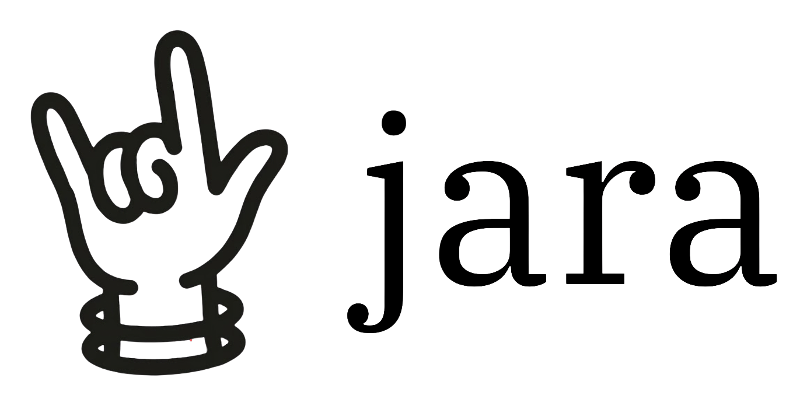

jara is an opinionated, local-first notes app for macOS. It makes a few strong choices so you can stop managing notes and just write them.
The idea
Most notes apps hand you endless places to put things. jara gives you one, and does the organizing for you.
No "new note" button, no folders, no deciding where anything goes. Each day is one page. Yesterday is a single click back.
Tag a line with an @label or start a checkbox. jara collects those lines onto one board so your tasks and threads stop scattering across days. You never file a thing.
A quiet calendar shows the days you wrote. Watch a streak build, and jump to any day without digging through a list.
Your notes are plain Markdown files, in a folder you choose. Open them anywhere, keep them for decades.
Local first. Nothing leaves your Mac unless you turn on sync, and then only to a repo you own.
No account, no subscription, no cloud lock-in. jara can disappear tomorrow and your notes stay.
Calm by default. One page, no feed, no notifications, nothing asking for your attention.
The beta isn't signed by Apple yet, so macOS asks before opening it the first time. This is a one-time step.
.dmg and drag jara into Applications.
If macOS says the app is "damaged," that's just the download flag. Open Terminal and run
xattr -cr /Applications/jara.app, then open it again.